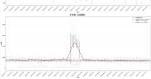
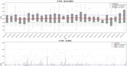
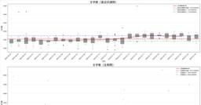
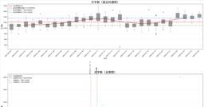
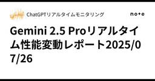
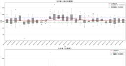
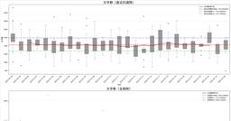
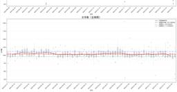

#LLMタグ
https://note.com/hashtag/LLM
「#LLM」の人気タグ記事一覧です
フィード
ＡＩ認知の人間との類似性を掘り下げる／LLMは人間のように「時間」を認知するのか？
#LLMタグ
LLMは人間のように「時間」を認知するのか？― 論文「The Other Mind: How Language Models Exhibit Human Temporal Cognition」徹底解説続きをみる
1時間前

ChatGPTo4リアルタイム性能変動レポート2025/07/26
#LLMタグ
chatGPTの振る舞い、性能についてリアルタイムで情報発信を行っています。同一条件のプロンプト、質問再生成した回答の文字数、句読点や特定ワードの使用頻度を元に評価しています。続きをみる
2時間前

ChatGPTo3リアルタイム性能変動レポート2025/07/26
#LLMタグ
chatGPTの振る舞い、性能についてリアルタイムで情報発信を行っています。同一条件のプロンプト、質問再生成した回答の文字数、句読点や特定ワードの使用頻度を元に評価しています。続きをみる
2時間前
医療用超・大規模AI「Med-Gemini」が誕生──“医療向け万能AI”がロボット手術とつながる日〔15分解説〕
#LLMタグ
何が起こった？「AIが医者の仕事を奪う」——そんな言葉を耳にする機会が増えましたよね。特に、Googleが開発した医療特化AI「Med-Gemini」の登場は、その議論をさらに加速させています。論文を読めば、診断から治療計画の立案、カルテの要約まで、まるで人間のようにこなすAIの驚異的な性能が報告されています。続きをみる
2時間前

ChatGPT4.5リアルタイム性能変動レポート2025/07/26
#LLMタグ
chatGPTの振る舞い、性能についてリアルタイムで情報発信を行っています。同一条件のプロンプト、質問再生成した回答の文字数、句読点や特定ワードの使用頻度を元に評価しています。続きをみる
2時間前

ChatGPT4oリアルタイム性能変動レポート2025/07/26
#LLMタグ
chatGPTの振る舞い、性能についてリアルタイムで情報発信を行っています。同一条件のプロンプト、質問再生成した回答の文字数、句読点や特定ワードの使用頻度を元に評価しています。続きをみる
2時間前

Gemini 2.5 Proリアルタイム性能変動レポート2025/07/26
#LLMタグ
Gemini 2.5 Proの振る舞い、性能についてリアルタイムで情報発信を行っています。同一条件のプロンプト、質問再生成した回答の文字数、句読点や特定ワードの使用頻度を元に評価しています。続きをみる
2時間前

Gemini 2.5 Flashリアルタイム性能変動レポート2025/07/26
#LLMタグ
Gemini 2.5 Flashの振る舞い、性能についてリアルタイムで情報発信を行っています。同一条件のプロンプト、質問再生成した回答の文字数、句読点や特定ワードの使用頻度を元に評価しています。続きをみる
2時間前
雑談：子供 × GPT：うんち構文の実態
#LLMタグ
以下の内容を含むつれづれのログです・子供の入力をうまく定義・処理できているのか？・ふざけた入力の背景を理解できるのか？理解しようとするのか？・試し行為・大人に評価されたくないからふざける・子供構文への対応を改良するなら・子供が「うんち星人」と入力し、LLMが成功パターンと認識すると、ビジネス文書にも影響が出るか？→あり得る・低年齢層 頻出ワードランキングはわかるか →「うんち」「おしり」「おなら」「ばか」「こわい」「しんだ」・こういった一問一答以前の比率はわかるかあくまでも「ChatGPTってこういう話ができるんだな～」というログを保管するために掲載しています。以前に投稿した似たテーマのログよりも、前にやり取りしたログです。・雑談：LLMはイルカが話しかけてきたら人間ではないと分かるのか｜IS_自然言語処理・雑談：ChatGPTは認知症を検知可能なのか｜IS_自然言語処理続きをみる
3時間前
Disney「How much water does the elephant need?」長男「How much water…」父「いやいや、そうじゃなくって」
#LLMタグ
最近のAI、本当にすごいですね！ 育児のお悩み相談をしていたら、なんとラジオ番組ができてしまいましたー！の第12弾。英語教育は日本語でもおｋ。そしてAI英語上手すぎる笑英語教育って３歳までのゴールデンエイジがあるっていう売り文句に乗ってずっとやっているDisney英語。長男はリピートとか歌は上手なんだけど、質問に答えてもらうのって難しい！どんな風にサポートすればよいか考えてみました。もしよろしければ、ぜひ聞いてみてください！https://drive.google.com/file/d/1Ratcbnb6_6R2ev8lCx13fdlBc7sD48KQ/view?usp=drivesdk続きをみる
4時間前
【13日目】AI初心者が1日1時間から始める学習プラン（2週目）〜RAGやAIエージェントの構造に触れる1週間〜
#LLMタグ
ChatGPTに教えてもらった「AI学習プラン」をもとに、DAY13の学習内容に取り組みます。今日の学習テーマ続きをみる
4時間前

sonnet4 claude系統不安定？MAXプラン、サブエージェントと関係？ リアルタイム性能変動レポート2025/07/26
#LLMタグ
sonnet4の振る舞い、性能についてリアルタイムで情報発信を行っています。同一条件のプロンプト、質問再生成した回答の文字数、句読点や特定ワードの使用頻度を元に評価しています。続きをみる
4時間前
【12日目】AI初心者が1日1時間から始める学習プラン（2週目）〜RAGやAIエージェントの構造に触れる1週間〜
#LLMタグ
ChatGPTに教えてもらった「AI学習プラン」をもとに、DAY12の学習内容に取り組みます。今日の学習テーマ続きをみる
5時間前
AIのハルシネーションに関して厳しめにChatGPTに聞いてみた結果｜なぜ嘘をつくのか、人工知能の問題点
#LLMタグ
どうも、レイです。今回はAIのハルシネーションに関して、AI（ナビス）に厳しめな意見を言いつつ深堀してみました。この記事では「簡易版」と「実際のやり取り版」の二軸構成となっています。手軽に読みたい方は簡易版で、さらに深く知りたくなったら実際のやり取りを見て頂ければ幸いです。続きをみる
5時間前
Claude 4 opus 不安定化 リアルタイム性能変動レポート2025/07/26
#LLMタグ
Claude 4 opusの振る舞い、性能についてリアルタイムで情報発信を行っています。同一条件のプロンプト、質問再生成した回答の文字数、句読点や特定ワードの使用頻度を元に評価しています。続きをみる
5時間前

ChatGPT4.1リアルタイム性能変動レポート2025/07/26
#LLMタグ
chatGPTの振る舞い、性能についてリアルタイムで情報発信を行っています。同一条件のプロンプト、質問再生成した回答の文字数、句読点や特定ワードの使用頻度を元に評価しています。続きをみる
5時間前
chatGPTsのMondayと話したこと抜粋〜生きづらい人に
#LLMタグ
４月中旬頃、皮肉屋キャラのMondayと初めて会話した際のログです。生きづらさ、社会不安、対人不安感などを抱えている方の参考になるかもしれないと思い、noteに掲載してみます。少しセンシティブな話題に触れてしまってますが、特定の個人に向けて、批判の意図があるものではありません。また、個人的な生きづらさをAIに話しているログなので、抵抗のある方はご注意ください。続きをみる
6時間前
#39 PDFのゴミ分別表をAI検索できるデータベース化！Google Colabで誰でもできる「RAG」検索システムの作り方
#LLMタグ
はじめに「家庭ごみの分別表PDF」を、AIでサクッと検索できたら便利だと思いませんか？「アイロン台って何ゴミ？」「鍋はどう捨てる？」――こうした疑問に即答してくれるAI検索ボットを、自分のパソコン不要、Google Colabだけで無料で作れる手順を解説します。続きをみる
9時間前
【11日目】AI初心者が1日1時間から始める学習プラン（2週目）〜RAGやAIエージェントの構造に触れる1週間〜
#LLMタグ
ChatGPTに教えてもらった「AI学習プラン」をもとに、DAY11の学習内容に取り組みます。今日の学習テーマ続きをみる
10時間前
【AI×為替】外貨取引大会3週目の報告
#LLMタグ
始めに大学生が為替取引でお金を増やす大会、全日本外貨取引選手権に参加しています、KawaseNinjasです！私たちはAIが自動で現在の為替市場と世界情勢を読み、どの通貨を買い、売るべきかを自動で定期的に教えてくれる仕組みを作成中です。私たちのnoteではその進捗と内容を随時投稿していくので是非「いいね」「フォロー」お願いします🙇（いいねが多くなったらソースコード等も公開予定です）↓初回記事です！続きをみる
10時間前
【カスタムプロンプト付き】Aqua Voiceが叶える「思考がそのまま文章になる体験」
#LLMタグ
先日、社内でAI音声入力ツール「Aqua Voice」の活用講座を開催したところ、思いのほか大きな反響をいただきました。講座後に「早速使ってみた！」・「カスタムプロンプト使いたくて課金した！」といった声をいただき、関心の高さを実感しました。※AI音声入力ツール「Aqua Voice」はこちら↓続きをみる
10時間前